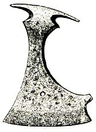

geležis - Vikižodynas
geležis
Puslapis iš Vikižodyno, laisvojo žodyno. Jump to navigation Jump to search Vikipedija Laisvojoje enciklopedijoje yra straipsnis: GeležisTurinys
1 Lietuvių kalba 1.1 Daiktavardis 1.1.1 Sinonimai 1.1.2 Vertimai 2 Taip pat žiūrėkiteLietuvių kalba [ taisyti ]
Daiktavardis [ taisyti ]
geležis ( dkt. , mot. g. , pagr. f. , vns. vard. , dgs. gal. ) Daiktavardis Pagrindinė forma : geležis vienaskaita daugiskaita vard. geležis geležys kilm. geležies geležų naud. geležiai geležims gal. geležį geležis įnag. geležimi geležimis viet. geležyje geležyse šauksm. geležie geležys Skiemenys : ge-le-žis geležis ( Cheminiai elementai ) - labai paplitęs, randamas rūdų ir mineralų pavidalu, kalus, greitai rūdijantis metalas , žymimas ( Fe ), atominis numeris 26 jo liejinys , gabalas ( tarm. ) - peilis , pjūklas ar šiaip koks aštrus daiktas ( tarm. ) ( dgs. ) - viryklės viršaus geležinės dalys
Sinonimai [ taisyti ]
geležis : ( Cheminiai elementai ) Fe (lt) pjūklas : aštrus daiktas geležis (lt) ( tarm. ) lentpjūklis (lt) pjūklas (lt) skersinė (lt) skerspjovė (lt) skerspjūklis (lt) štikžiogis (lt) ( nevart. ) žiogė (lt) ( nevart. )Vertimai [ taisyti ]
geležis : ( Cheminiai elementai ) Actekų kalba : tlīltepoztli (nah) Afrikanų kalba : yster (af) Airių kalba : iarann (ga) alabamiečių kalba : ochana (akz) Albanų kalba : hekuri (sq) Alemanų kalba : Iise (gsw) Anglų kalba : iron (en) Arabų kalba : حديد (ar) ( vyr. g. ) (ħadīd) aramėjų kalba : Hebrajų: פרזלא (arc) ( vyr. g. ) (parzlā, parzlo) Sirų: ܦܪܙܠܐ (arc) ( vyr. g. ) (parzlā, parzlo) Armėnų kalba : երկաթ (hy) (erkat‘) Arumunų kalba : her (rup) Astūrų kalba : fierro (ast) ( vyr. g. ) Aukštutinių sorbų kalba : železo (hsb) ( bev. g. ) avestos kalba : ayanghaênaca (ae) Azerbaidžaniečių kalba : dəmir (az) Baltarusių kalba : жалеза (be) ( mot. g. ) (žaléza) Baskų kalba : burdin (eu) / burdina (eu) bendų kalba : ijela (bdp) Bengalų kalba : লোহা (bn) (lohā) brunėjaus bisajų kalba : puthaw (bsb) benų kalba : ikyuma (yun) bondejų kalba : chuma (bou) Bosnių kalba : željezo (bs) ( bev. g. ) Botijų kalba : nurodykite žodžio geležis vertimą(-us) (Botijų kalba), žr. brahujų kalba : اهین (brh) (âhin) Bretonų kalba : houarn (br) ( vyr. g. ), hern (br) / houarnoù (br) ( prk. ) Bulgarų kalba : желязо (bg) ( bev. g. ) (željázo) bungų kalba : ichuma (wun) Čekų kalba : železo (cs) ( bev. g. ) Čerokių kalba : ᏔᎷᎩᏍᎩ (chr) (talugisgi) Čiuvašų kalba : тимĕр (cv) Čečėnų kalba : иту (ce) (itu) Danų kalba : jern (da) ( bev. g. ) davidų kalba : chuma (dav) dohių kalba : chuma (doe) Žemutinių sorbų kalba : zelezo (dsb) ( bev. g. ) džao kalba : chisyano (yao) džitų kalba : echuma (jit) Erzių kalba : кшни (myv) Esperanto : fero (eo) Estų kalba : raud (et) eštehardžių kalba : آهِن (esh) (âhen) Farerų kalba : jarn (fo) ( bev. g. ) Filipinų kalba : bakal (fil) fipų kalba : ichela (fip) Fryzų kalba : izer (fy) furilų kalba : fier (fur) Galisų kalba : ferro (gl) gičiukų kalba : cuma (cuh) Graikų kalba : σίδηρος (el) ( vyr. g. ) (sídiros) (chemijoje), σίδερο (el) ( bev. g. ) (sídero) (metalurgijoje) Kartvelų kalba : რკინა (ka) (rkina) Gudžaratų kalba : લોખંડ (gu) guzių kalba : ekioma (guz) , egetange (guz) Gvaranių kalba : kuarepoti (gn) gvenų kalba : minya (gwe) gverių kalba : kyoma (gwr) ha kalba : ichuuma (haq) Haičio kreolų kalba : fè (ht) Chakasų kalba : timîr (kjh) hangazų kalba : ichuma (han) Havajiečių kalba : hao (haw) ekihajų kalba : ekyoma (hay) Hebrajų kalba : ברזל (he) (barzel) hehių kalba : ichuma (heh) Hindi : लोहा (hi) (lohā) Ido : fero (io) ikizu kalba : echoma (ikz) Hiligainonų kalba : salsalon (hil) Indoneziečių kalba : besi (id) Interlingua : ferro (ia) Islandų kalba : járn (is) ( bev. g. ) Ispanų kalba : hierro (es) ( vyr. g. ) Italų kalba : ferro (it) ( vyr. g. ) Japonų kalba : 鉄 (ja) ( てつ (ja) , tetsú) Javiečių kalba : wesi (jv) Jidiš : אײַזן (yi) ( bev. g. ) (ayzn, ajsn)Šablonas:sudv1 [[gelzā#_ Šablonas:lang:sud |gelzā]] (sud)
kambų kalba : kyUma (kam) karelų kalba : rauta (krl) karokų kalba : áyan (kyh) Katalonų kalba : ferro (ca) ( vyr. g. ) katobų kalba : dorob (chc) Kazachų kalba : темир (kk) (temir) kačų-kaduglių-mirių kalba : ndhalele (xtc) Kašubų kalba : żelazło (csb) ( bev. g. ) kerevių kalba : echoma (ked) Kečujų kalba : chuki (qu) , khillay (qu) Khmerų kalba : ត្រាដែក (km) (trādæk) kiembu kalba : cuma (ebu) kikujų kalba : kigera (ki) kikvajų kalba : ekyuma (kya) kimbu kalba : ichuma (kiv) kinjaruanda kalba : ichyuma (rw) , ubutare (rw) Gan kalba : 鐵 (gan) Hakų kalba : thiet (hak) Kinų mandarinų kalba : 鐵 (cmn) , 铁 (cmn) (tiě) Pietų minų kalba : thih (nan) kiribačių kalba : biti (gil) , monei (gil) kisių kalba : lyoma (kiz) kitharakų kalba : ithaga (thk) kongiečių kalba : kibende (kg) Kornų kalba : horn (kw) Korsikiečių kalba : ferru (co) Korėjiečių kalba : 철 (ko) ( 鐵 (ko) , cheol), 쇠 (ko) (soe) Kroatų kalba : željezo (hr) ( bev. g. ) Krymo totorių kalba : temir (crh) kunigamių kalba : クルガニ (xug) (kurugani) Kurdų kalba : ئاسن (ku) , asin (ku) , hesin (ku) kurijų kalba : ikioma (kuj) kikutu kalba : zuma (kdc) kverių kalba : zuma (cwe) lambių kalba : ichijela (lai) langių kalba : chuma (lag) Latgalių kalba : dzeļzs (ltg) ( mot. g. ) Latvių kalba : dzelzs (lv) ( mot. g. ) Lenkų kalba : żelazo (pl) ( bev. g. ) Limburgiečių kalba : iezer (li) lingala kalba : ebendé (ln) Liuksemburgiečių kalba : Eisen (lb) ( bev. g. ) Lojban : tirse (jbo) Lotynų kalba : ferrum (la) , ferri (la) ( bev. g. ) lugandų kalba : kyuma (lg) Luhijų kalba : shibia (luy) , esibya (luy) lulogūlių kalba : kivya (rag) , kichuma (rag) Makedonų kalba : железо (mk) ( bev. g. ) (železo) mačambių kalba : minya (jmc) , shuma (jmc) makondžių kalba : chitale (kde) Malagasių kalba : vy (mg) Malajalių kalba : ഇരുമ്പ് (ml) Malajų kalba : besi (ms) , ferum (ms) malilų kalba : ishijela (mgq) Maltiečių kalba : ħadid (mt) mambvių-lungu kalba : ichela (mgr) Maorių kalba : rino (mi) Marathų kalba : लोखंड (mr) masabų kalba : sikyuma (myx) , siibyaa (myx) , sisiuma (myx) matengų kalba : so ma (mgv) matumbių kalba : kyOma (mgw) mbungų kalba : kyuma (mgy) Menksiečių kalba : yiarn (gv) merų kalba : minya (mer) ; ithaga (mer) , chuma (mer) (Imenti); ithaa (mer) (Tigania) Mongolų kalba : төмөр (mn) (tömör) mošių kalba : pasi (old) mpotų kalba : kihano (mpa) Navahų kalba : béésh (nv) (metalas), béésh ditʼóódígíí (nv) (išlietas geležis) ndalių kalba : ichela (ndh) ndambų kalba : lyuma (ndj) ndengerekų kalba : kiuma (ndg) Neapoliečių kalba : ffierro (nap) ( vyr. g. ) Nepalų kalba : phalam (ne) ngindų kalba : chOma (nnq) ngonių kalba : kyuma (ngo) ngoremių kalba : ekyooma (ngq) niankorių kalba : ekyoma (nyn) nilambų kalba : ishuka (nim) niorų kalba : obutare (nyo) njakjusų kalba : ikyuma (nyy) njambų kalba : echoma (now) njaturu kalba : ichuria (rim) , ichuma (rim) Normanų kalba : fé (nrf) , faer (nrf) , fer (nrf) Norvegų kalba : Bokmål: jern (no) ( bev. g. ) Nynorsk: jern (no) ( bev. g. ) Nyderlandų kalba : ijzer (nl) ( bev. g. ) odžibvės kalba : biiwaabik (oj) okinavų kalba : くるかに (ryu) (kurukani), てぃち (ryu) (tiCi) Oksitanų kalba : fèrre (oc) Osetinų kalba : ӕфсӕн (os) (äfsän) pali kalba : aya (pi) pangvų kalba : shuma (pbr) Pandžabų kalba : ਲੋਹਾ (pa) Persų kalba : آهن (fa) (âhan) pimbvių kalba : ichela (piw) Portugalų kalba : ferro (pt) ( vyr. g. ) potavatomių kalba : biwabuk (pot) Prancūzų kalba : fer (fr) ( vyr. g. ) Prūsų kalba : gelzā (prg) Kelniečių kalba : Eisen (ksh) ( bev. g. ) rotumanų kalba : 'ia 1 (rtm) rufidžių kalba : kioma (rui) rukigų kalba : obutare (cgg) rundžių kalba : ikyuma (run) Rumunų kalba : fier (ro) ( bev. g. ) rungvų kalba : ichela (rnw) Rusų kalba : железо (ru) ( bev. g. ) (želézo), феррум (ru) ( vyr. g. ) (férrum) safvų kalba : ijela (sbk) Samojiečių kalba : u'amea (sm) Sanskritas : लोह (sa) (loha) Sebuanų kalba : puthaw (ceb) Senoji anglų kalba : īsern (ang) senoji bažnytinė slavų kalba : Glagolica: ⰆⰅⰎⰡⰈⰑ (cu) ( bev. g. ) (želězo) Kirilica: жєлѣзо (cu) ( bev. g. ) (želězo) Senovės skandinavų kalba : járn (non) ( bev. g. ) Serbų kalba : Kirilica: гвожђе (sr) ( bev. g. ) , железо (sr) ( bev. g. ) Lotyniškai: gvožđe (sr) ( bev. g. ) , železo (sr) ( bev. g. ) serių kalba : enim (sei) Siciliečių kalba : ferru (scn) Slovakų kalba : železo (sk) ( bev. g. ) Slovėnų kalba : železo (sl) ( bev. g. ) lusogų kalba : ekyuma (xog) subų kalba : ikyoma (sxb) sukumų kalba : jisinza (suk) sumbvų kalba : syoma (suw) Suomių kalba : rauta (fi) Suahilių kalba : chuma (sw) šambalų kalba : kiama (ksb) Škotų kalba : airn (sco) Škotų gėlų kalba : iarrnaig (gd) , iarann (gd) šubių kalba : ichuuma (suj) šumerų kalba : 𒀭𒁇𒋤 (sux) (AN.BAR.SUD) Švedų kalba : järn (sv) ( bev. g. ) Tadžikų kalba : оҳан (tg) Tagalų kalba : bakal (tl) Tajų kalba : เหล็ก (th) (lek) tamaziktų kalba : ⵓⵣⵣⴰⵍ (tzm) ( vyr. g. ) (uzzal) Tamilų kalba : இரும்பு (ta) (irumpu) Telugų kalba : ఇనుము (te) (inumu) temių kalba : gexoji (soz) Tibetiečių kalba : nurodykite žodžio geležis vertimą(-us) (Tibetiečių kalba), žr. toorų kalba : ekyoma (ttj) Turkmėnų kalba : demir (tk) Turkų kalba : demir (tr) Uigūrų kalba : تۆمۈر (ug) (tömür) Ukrainiečių kalba : залізо (uk) ( bev. g. ) (zalízo) Urdu : لوہا (ur) Uzbekų kalba : темир (uz) (temir) valpurų kalba : jitipayini (wbp) Valų kalba : haearn (cy) vandų kalba : ohela (wbh) vandžių kalba : kyuma (wbi) Venetų kalba : fero (vec) Vengrų kalba : vas (hu) Vietnamiečių kalba : sát (vi) , sắt (vi) vinzų kalba : ikyuma (vin) Vokiečių kalba : Eisen (de) ( bev. g. ) Volapiukas : ferin (vo) Volofų kalba : feer (wo) , weñ (wo) vundžių kalba : menya (vun) zanakių kalba : ekyema (zak) zaramų kalba : zuhma (zaj) zigulų kalba : zuma (ziw) zimbų kalba : chuma (zmb) zinzų kalba : echooma (zin) Žemaičių kalba : gelžės (bat-smg) ( mot. g. ) namvangų kalba : ichela (mwn) Vokiečių žemaičių kalba : Iesen (nds) ( bev. g. )Taip pat žiūrėkite [ taisyti ]
H 2
He 2 3
Li 4
Be 5
B 6
C 7
N 8
O 9
F 10
Ne 3 11
Na 12
Mg 13
Al 14
Si 15
P 16
S 17
Cl 18
Ar 4 19
K 20
Ca 21
Sc 22
Ti 23
V 24
Cr 25
Mn 26
Fe 27
Co 28
Ni 29
Cu 30
Zn 31
Ga 32
Ge 33
As 34
Se 35
Br 36
Kr 5 37
Rb 38
Sr 39
Y 40
Zr 41
Nb 42
Mo 43
Tc 44
Ru 45
Rh 46
Pd 47
Ag 48
Cd 49
In 50
Sn 51
Sb 52
Te 53
I 54
Xe 6 55
Cs 56
Ba 57-71 72
Hf 73
Ta 74
W 75
Re 76
Os 77
Ir 78
Pt 79
Au 80
Hg 81
Tl 82
Pb 83
Bi 84
Po 85
At 86
Rn 7 87
Fr 88
Ra 89-103 104
Rf 105
Db 106
Sg 107
Bh 108
Hs 109
Mt 110
Ds 111
Rg 112
Cn 113
Nh 114
Fl 115
Mc 116
Lv 117
Ts 118
Og lantanoidai 57
La 58
Ce 59
Pr 60
Nd 61
Pm 62
Sm 63
Eu 64
Gd 65
Tb 66
Dy 67
Ho 68
Er 69
Tm 70
Yb 71
Lu aktinoidai 89
Ac 90
Th 91
Pa 92
U 93
Np 94
Pu 95
Am 96
Cm 97
Bk 98
Cf 99
Es 100
Fm 101
Md 102
No 103
Lr